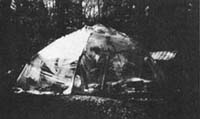
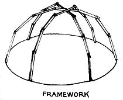
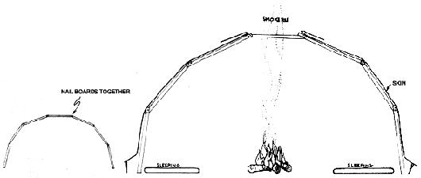

At least one wit has suggested that Mike Turcot's Indian name should be either " He-whose-lodge-falls-down" or "Thumbpounder" instead of the rather grand "Crazy Horse". Mike, however, claims that such jocularity is entirely uncalled for. At any rate, here's how he and his friends built a six-dollar dome.
If you made it to Union Grove, North Carolina last Easter for the 49th annual OldTime Bluegrass Fiddlers Convention, you probably recall some of the unusual and innovative structures erected by the more than 100,000 campers who showed up to get high on the music. Among the unorthodox shelters, you may have noticed a clear plastic dome, over 20 feet in diameter and 10 feet high, known as the Umbrella. That poly bubble-the brainchild of the Umbrella Conspiracy: He-who-talks, Wounded Buffalo, Pete and myself-cost only $6.00 and took the four of us just three hours to construct.
The idea for the Umbrella came to us because we needed a cheap structure that could be erected simply, from readily available materials, by ordinary people with no special skills. Techniques such as conventional geodesics were automatically ruled out . . . first because none of us had a head for the necessary math, and also since we all felt that the precise regularity of a geometrically constructed shape-while perfectly acceptable to the computer that developed it-was rather boring and lifeless as housing for real human beings. In short, we wanted a funky shelter that would respond to the whims of its makers and would come out different each time no matter how many were built. We think our Umbrella Dome met those requirements.
The Umbrella's basic framework consisted of three arches made of wood struts that were overlapped and nailed together at their ends. Those supports were erected as shown in the diagram and lashed together at the top. No comples cutting or fastening is required just lay out the boards in the desired curve, with their ends resting one on another, and bang in a couple of nails at each joint. You don't even need a hammer (we forgot ours and made do with rocks and a hatchet)
The shape of the arch is what determines the shape of the finished dome; so-if you decide to join the Umbrella Conspiracy-take care when you lay out the struts for your bubble. You can use any, number of boards and vary the curve to suit your fancy or the necessities of your living space. The only requirements are that the top of the arc be reasonably fiat and the bottom boards be more or less perpendicular with the ground. Each support should at least vaguely resemble a half circle.
You can be equally flexible about materials: We worked with five-foot struts of 1" X 3" oak, but just about anything will do. Don't use big heavy timbers, however . . . they weigh too much and aren't necessary.
When you've nailed your first arch together, you may think the result looks pretty flimsy. That's OK, because the only function of the supports is to support the plastic and give it shape. The skin takes most of the load and distributes the stresses so that the completed structure is quite strudy.
Brush aside your doubts, then, make two more arches using the first as a pattern. One should be a few inches taller than the model and other a few inches shorter (so that when the supports are put up the top struts of your second and third semicircles will fit just over and just under the top of Number One).
Don't worry about being precise your carpentry. All the little variations contribute to the funkiness of completed structure and help you away from the idea that houses should be regular and exact. Remember that any variations are just manifestations of the cosmic flow, and that the finished ished dome will thus reflect the spiritual conditions that prevailed during construction. A lodge so created fits much better into the scheme of things and doesn't disturb the universal energy because it is part of that wholeness. Think of the Umbrella as just growing by itself-like a tree or a flower-without regard for angles, precision or plan. Have you ever seen a tree that was put together wrong?
When you've finished all three arches, carefully raise therm one at a time (with a person at each end). Steady . . . they're very fragile at this point and can break easily. This is the time when an unexpected wind can destroy the whole thing in about two seconds. This is also the time when all the friends and/or spectators who should be arriving to have a look at this weirdness will shake their heads and tell you that the building will never work. Don't believe them . . . get them to help.
Once you have the three arches in place so that the struts are more: or less evenly spaced around the perimeter; lash the supports together tightly at the top where they cross. If you're ex pecting winds you may want to run a ropy: from this point to a stake inside the dome as insurance that your new home won't blow away.
Now begin putting on the skin. You'll probably have to continue holding up the arches while you do this since the dome will have no strength until it's covered. Begin at the bottom and run a long strip of plastic completely around the perimeter. Due to the curve of the structure (you can't just stretch a flat surface over a sphere) there will be a lot of slack at the top of the sheet. Ignore this for the moment and begin securely stapling the skin to the struts all around the bottom of the strip. When this is done go back, pull the excess material to one side or the other of each face of the dome and staple the top edge to the arches. Be careful not to rip the plastic, but stretch it as tight as you can. Then start another width of poly around the shelter farther up, overlapping the first layer by a few inches shed rain.
Don't forget to leave a smoke hole at the top of the Umbrella if you plan to have a fire inside. . . and also leave a few flaps around that opening close it in bad weather. Finally, just cut a door in one wall and move in. Decorate your new home to suit your taste . . . we ornamented the perimeter ours with the sky signs of all the people who lived inside.
Dome dwellers should lift up the Umbrella's skin in a couple of places at the bottom for ventilation, especially if the sun is bright or a fire is burning within. Air circulates naturally through the structure, without fans or electricity: as the interior atmosphere becomes warm it rises and passes out the smoke hole, drawing cooler air through the vents at ground level.
We lived in our dome for five days in perfect comfort, and felt very close to the outdoors under that clear plastic skin. At one point we had over 40 people inside the Umbrella for a party and still had no problems. Some individuals we met at the convention confrmed our experience . . . they had iived in a similar shelter for a whole trouble-free summer. In fact, for space, comfort and pleasant living coupled with low cost and little work, we think the Umbrella Dome is hard to beat.
|
 |
 |
 |